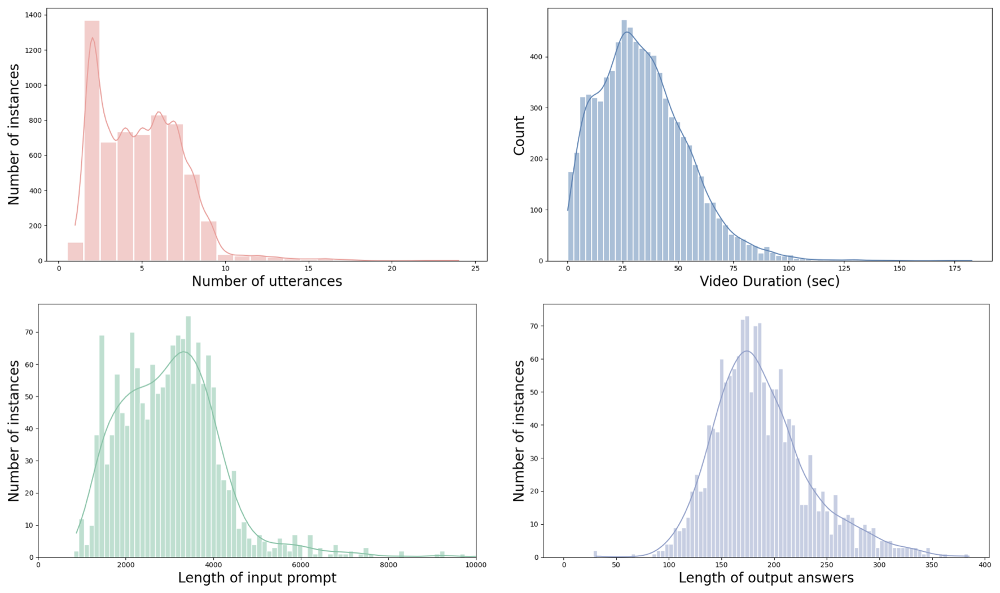
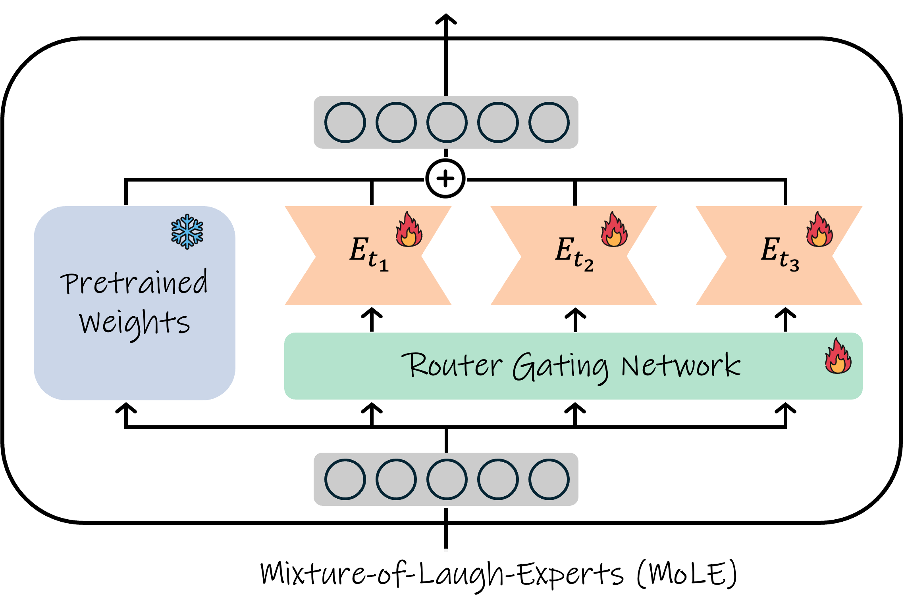
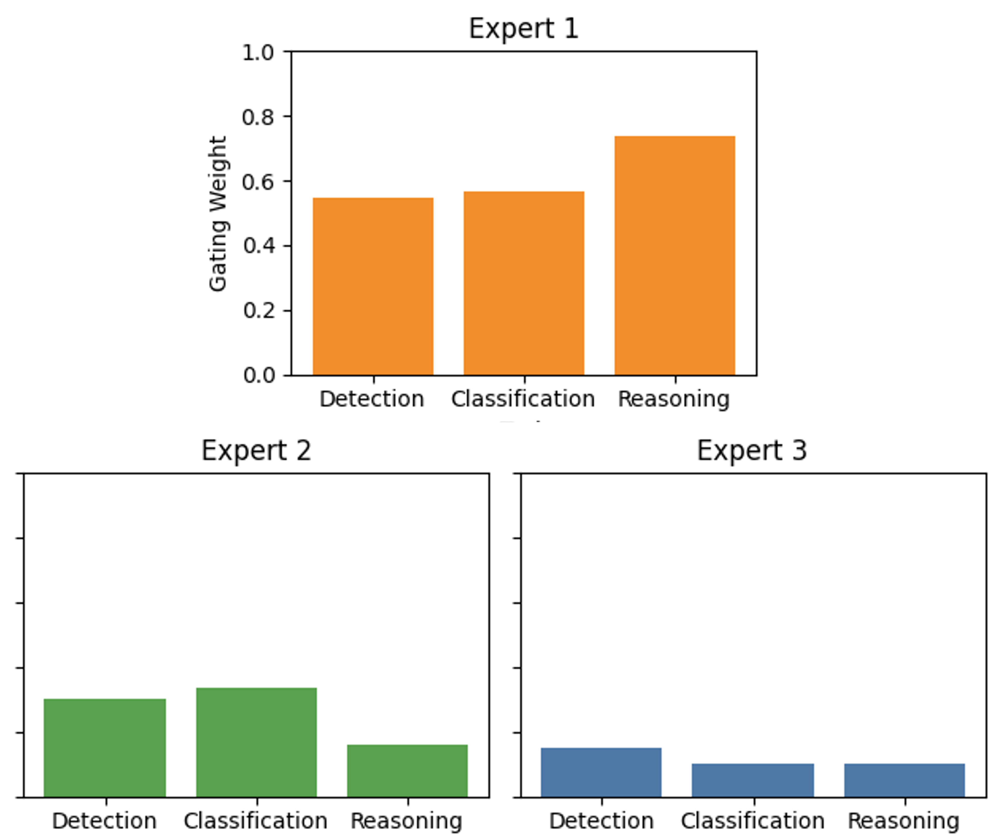
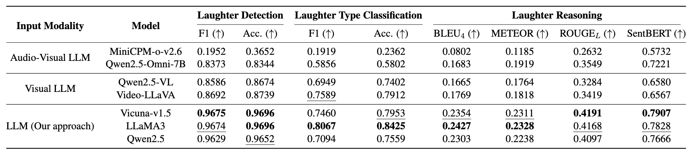

Abstract
Laughter is a complex social signal that conveys communicative intent beyond amusement. While prior work has focused on isolated laughter analysis tasks, a comprehensive understanding of laughter in real-world scenarios remains underexplored. We introduce SMILE-Next, a dataset for real-world laughter understanding with multimodal textual representations and question–answer annotations across three tasks: laughter detection, laughter type classification, and laughter reasoning. Building on this dataset, we propose a laughter expert LLM that leverages disentangled multimodal textual cues, together with a Mixture-of-Laugh-Experts framework and laughter-specific self-instruction for task-adaptive specialization. Experimental results show that the combination of our proposed components substantially outperforms multimodal LLM baselines, advancing robust real-world laughter understanding.
SMILE-Next: Real-World Laughter Dataset
Dataset Statistics

Laughter-tailored Self-Instruct
Input: During a tense board meeting at her office, Sarah tries to lighten the mood with a faint chuckle after the boss makes a dry joke. Her co-workers don't seem to respond much.
Answer: Forced, low intensity
Input: Acoustic feature: irregular pace, variation in pitch (Laughter)
Answer: This could suggest a nervous laughter or possibly a fake laugh.
Mixture-of-Laugh-Experts


Results
Quantitative Results

Qualitative Results